小三通抵廈 · 老城 · 夜遊
松山 → 金門 → 廈門 · 中山路八市 · 鷺江夜遊
松山機場出發
台北松山機場起飛，前往金門國際機場。飛行時間約1.5小時，記得提前2小時到機場辦理手續，準備好台胞證。
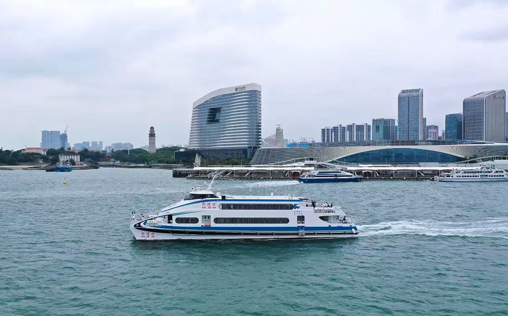
小三通金門水頭碼頭 → 廈門五通碼頭
從金門水頭碼頭搭乘小三通渡輪前往廈門五通碼頭，航程約1小時。請提前準備好台胞證辦理出入境，建議提早30分鐘到碼頭候船。過海峽時可在船頭欣賞金廈兩岸風光。
廈門中山路宜度·潮宿
港口專車接機，直送中山路步行街精品民宿。放好行李、稍作休息，準備出發探索廈門最熱鬧的街區。
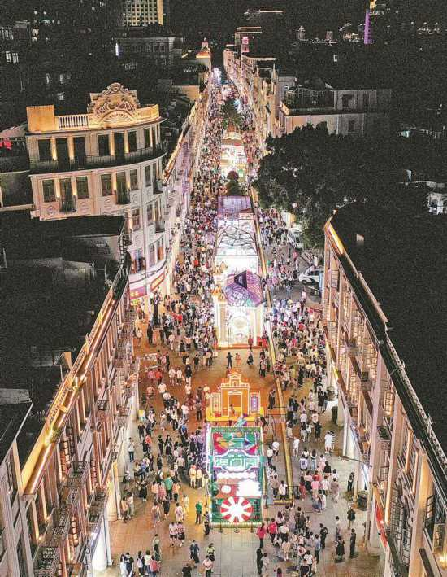
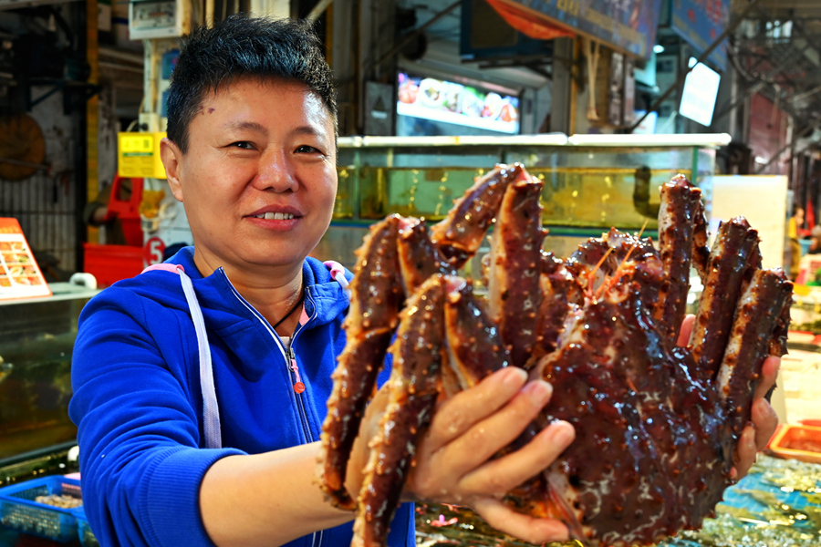
中山路步行街 ＆ 第八市場（八市）
先逛中山路百年騎樓老街，再接著走到八市感受在地海鮮市場與市井節奏。兩地合併安排，抓約 2 小時輕鬆逛逛，邊吃邊拍剛剛好。
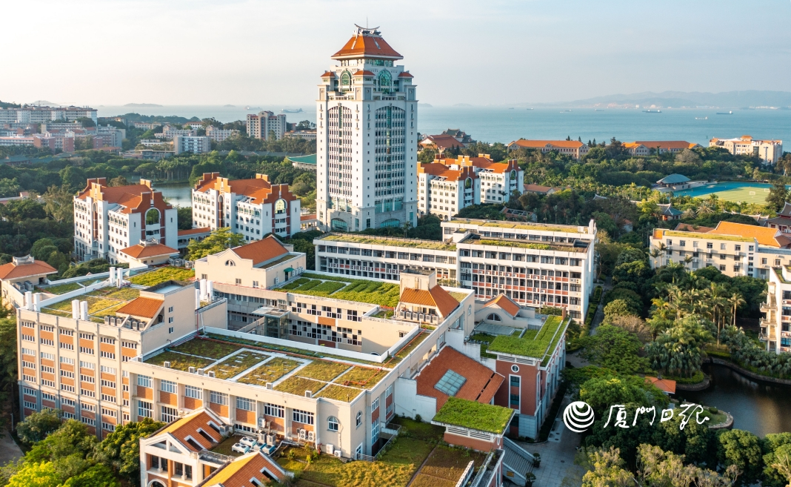
廈門大學廈門大學
被譽為「中國最美大學」，校園內嘉庚建築群、芙蓉湖、芙蓉隧道塗鴉都是經典。芙蓉湖邊可看黑天鵝與頌恩樓倒影；芙蓉隧道內有學生創作的各式塗鴉牆，非常適合拍照留念。校園平坦好走，適合長輩輕鬆漫步。
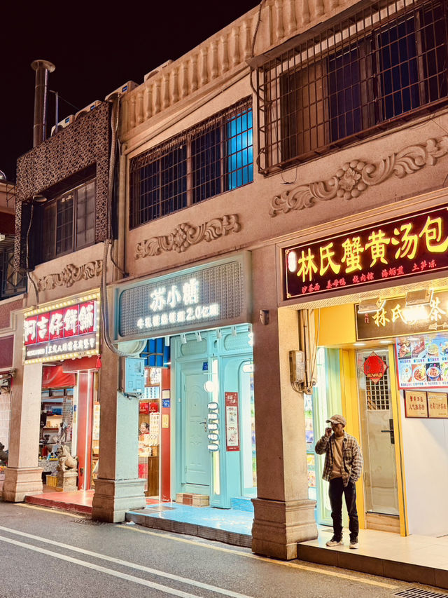
文創街區沙坡尾 > 晚餐
廈門島內唯一保留的原生態老漁港，百年避風塢至今仍有漁船停靠，傳統漁港與現代城市地標「世茂雙子塔」同框，是沙坡尾最經典的打卡畫面。藝術西區由老廠房改造而成，彩虹牆、塗鴉牆都是熱門拍照點。大學路沿線遍布文藝小店、咖啡廳和老字號小吃，非常適合傍晚散步、拍照、吃美食。
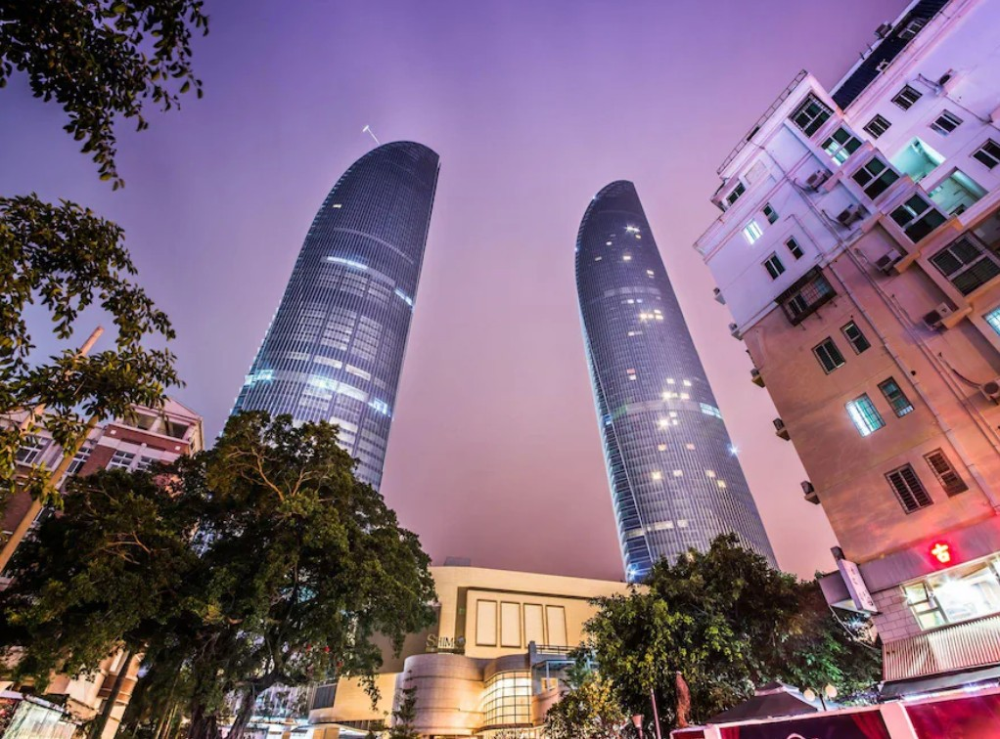
觀景台世茂雙子塔(看情況要不要上去)
廈門最高地標建築（A塔64層、B塔55層，高300公尺），55層觀景台「雲上廈門」360度全景落地窗，可俯瞰廈門全島、鼓浪嶼、環島路，視野絕佳。不想買門票的話，可選擇高層咖啡廳（約300-500元低消），點杯飲料就能享受同樣的高空夜景。晚上22:00關燈，建議早點去。
鷺江夜遊
搭乘豪華遊船夜遊鷺江，盡覽廈門環島路、演武大橋、雙子塔與鼓浪嶼璀璨夜景，海風輕拂浪漫至極。船上有露天觀景甲板與現場演奏。
海上地鐵 · 集美人文 · 後灣海鮮散步
穿越海底到集美 · 學村與鰲園 · 午後海鮮收尾
廈門地鐵 1 號線 — 海上地鐵
全球少見的「海底地鐵」，集美學村站 ↔ 高崎站，地鐵穿越海底隧道時，部分路段可見海底景觀。坐窗邊座位感受在海底穿行的奇特體驗，拍影片超吸睛！
逛老院子景區
2026年全面升級！廈門老院子景區從「民俗文化+閩南傳奇」雙模塊，擴展為六大主題區：民俗文化風情園、360度旋轉舞台《閩南傳奇》秀、室外實景《海戰風雲》、萌寵企鵝館、童夢水樂園、天空之城觀光塔。
閩南傳奇秀
集合閩南文化精髓的大型實景演出，融合歌舞、雜技、民俗表演，視覺震撼。
集美學村 · 龍舟池
陳嘉庚先生創辦的著名學村，融合閩南紅磚建築與西洋風格，「穿西裝、戴斗笠」是其最大特色。龍舟池波光粼粼，岸邊建築倒映水中，美不勝收。開放式學村，免費入場。
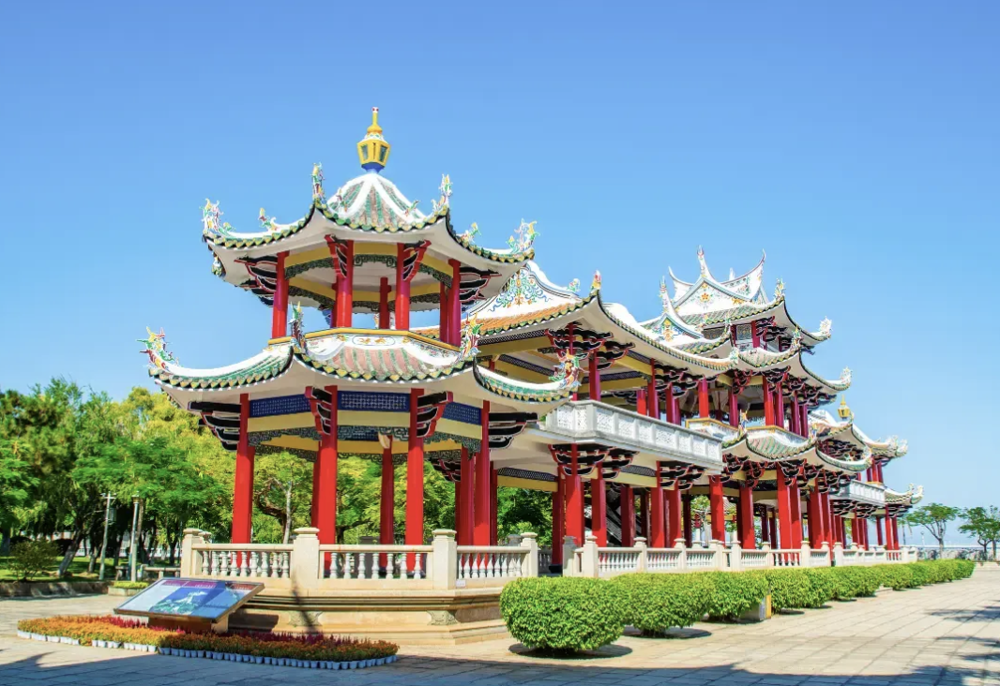
公園嘉庚公園 · 大社
陳嘉庚先生紀念公園，景色幽靜，可遠眺集美學村與龍舟池。大社區域保留閩南古厝聚落風貌，感受在地生活氣息，免費入場。
十里長堤 · 海上夕陽
集美區絕美海岸線，地鐵1號線從海面駛過的「海上列車」畫面就在這裡！傍晚時分夕陽灑落海面，草坪上常有街頭樂隊演出，是廈門年輕人最愛的免費看海景點。可遠眺杏林大橋、廈門大橋夜景。
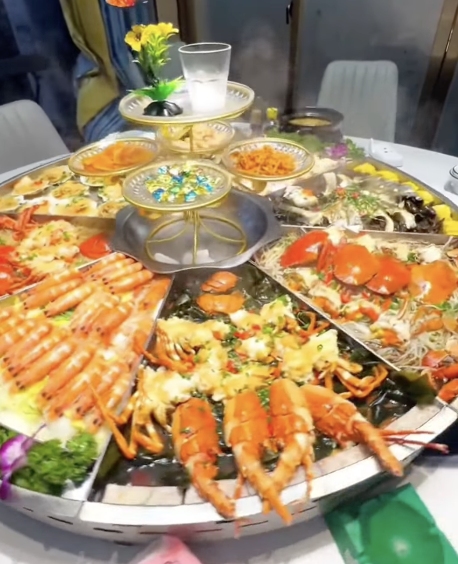
晚餐后田海鮮
廈門在地知名海鮮餐廳，食材新鮮、料理道地，是當地人常去的聚餐首選，今晚大快朵頤。
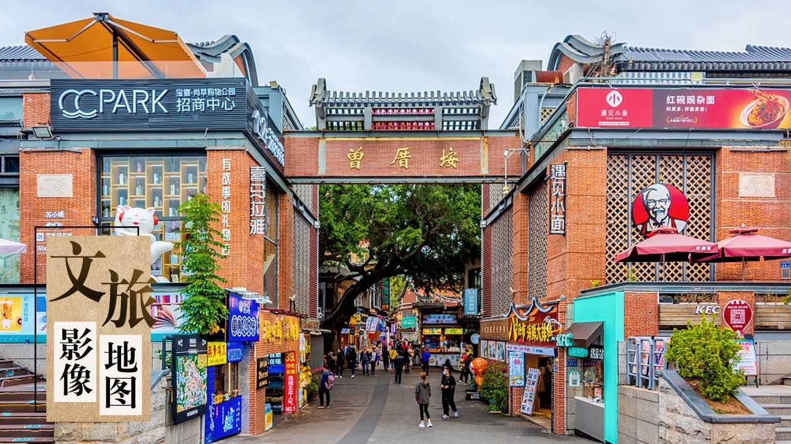
文創村落曾厝垵 · 文藝漁村
被譽為「全國最文藝漁村」，由百年漁村改造而成的文創聚落。白天是安靜的文藝小巷，晚上搖身一變成為熱鬧夜市！必吃海蠣煎、土筍凍、阿信厚吐司、烤生蠔。巷弄間藏著咖啡館、酒吧、文創小店，環島路海灘就在旁邊。
南靖土樓一日遊 · 雲水謠 · 四菜一湯
跟團出發 · 雲水謠古道與土樓群 · 傍晚返回廈門
雲水謠景區
古稱「長教」，因電影《雲水謠》而聞名。千年古榕樹群遮天蔽日，古道、水車、土樓構成如畫風景。和貴樓建在沼澤上、懷遠樓精緻雕工，令人嘆為觀止。
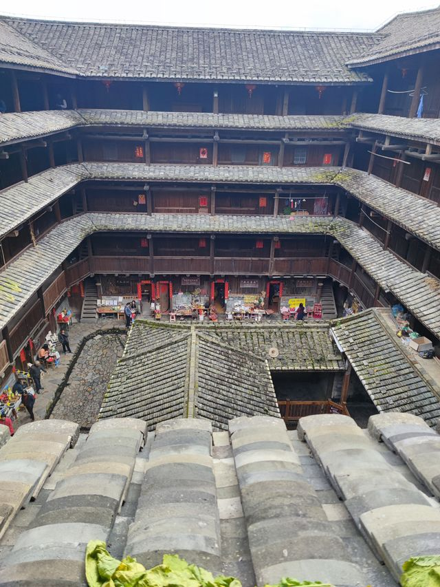
土樓和貴樓
建在沼澤地上的方形土樓，地基插入無數松木樁，歷經300年依然屹立不倒，被稱為「最神奇的土樓」。院內的水井清澈見底，兩口井相距咫尺卻一淡一鹹。
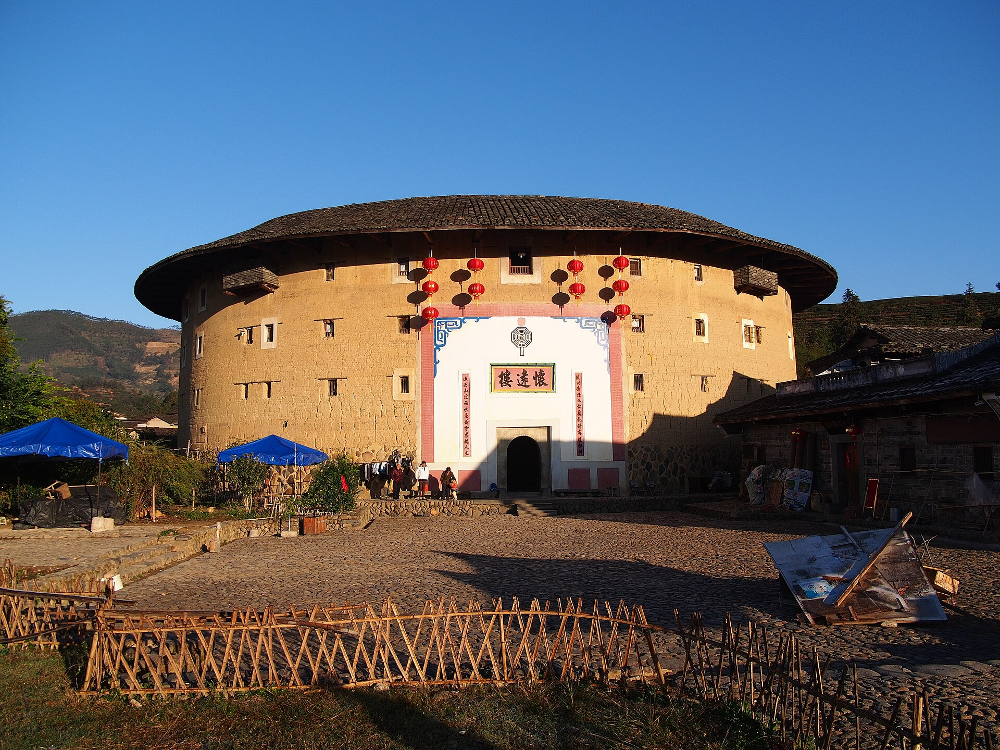
土樓懷遠樓
懷遠樓建於清末（1905–1909），是雲水謠一帶最具代表性的雙環圓形土樓之一。外觀樸實厚重、內部工藝細膩，最值得看的是內院核心的祖堂「斯是室」，雕樑畫棟、書卷氣十足。
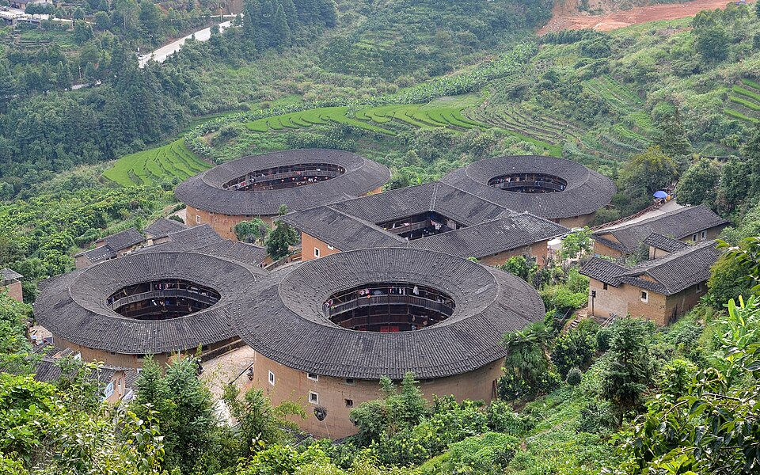
土樓群田螺坑景區 — 四菜一湯
由四座圓樓與一座方樓組合而成，從山上俯瞰形似「四菜一湯」，是福建土樓最具代表性的景觀，登景觀台拍照是遊客必做的事，建議從上下兩個景觀台各拍一次。
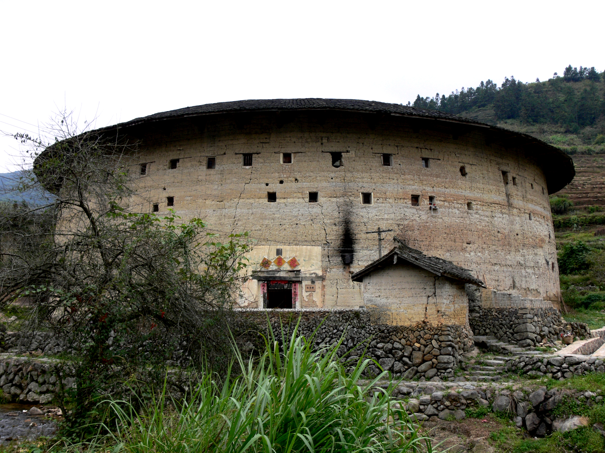
土樓裕昌樓 — 東倒西歪樓
建於元代，距今約700年，是現存最古老的土樓之一。最大特色是柱子全部向右傾斜，但歷經百年風雨依然穩固，被稱為「東倒西歪樓」，展現古代建築的神奇智慧。
包車回廈門 · 換飯店 · 晚上自由活動
包車返回廈門，記得搭計程車前往廈門鑫安頤豪飯店取行李並辦入住。晚上自由活動，火車站六號出口附近有大賣場可以買衣服購物。
鼓浪嶼經典巡遊 · 日光岩 · 洋樓博物館
搭船上島 · 花園古蹟與小食街 · 傍晚回程
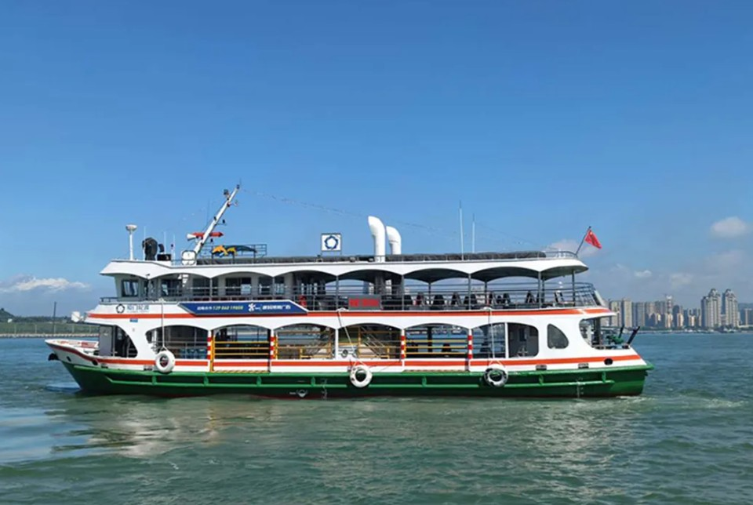
渡輪東渡碼頭搭船前往鼓浪嶼
從東渡碼頭搭船前往鼓浪嶼，航行時間約 30 分鐘。長者可使用特殊旅客預約通道。
最美轉角 · 拍照打卡
鼓浪嶼知名網紅拍照點，老洋房與綠蔭巷弄交疊，光影迷人。適合在參觀場館之間穿插走訪，感受島嶼的靜謐之美。
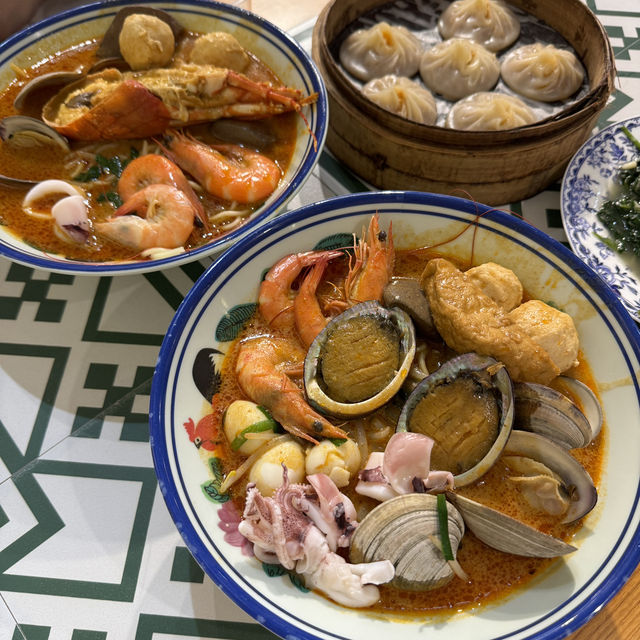
美食龍頭路小吃 · 午餐自理
鼓浪嶼最熱鬧的美食街，推薦花生湯、黃勝記豬腿肉、龍頭路餡餅等在地小食。
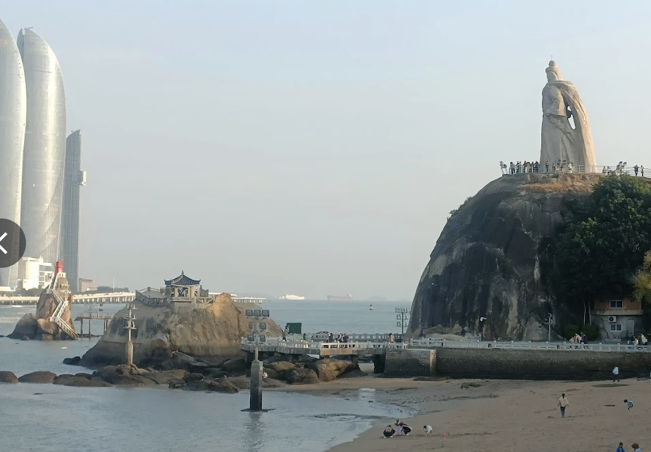
景點皓月園 · 鄭成功雕像
以民族英雄鄭成功為主題的紀念公園，園內有15.7公尺高的石雕立像面朝台灣海峽，壯觀威武。
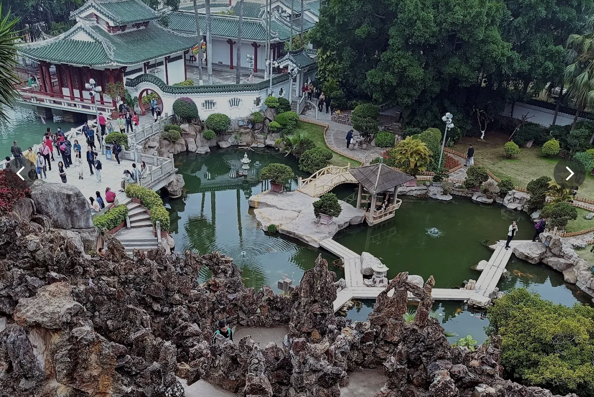
園林菽莊花園
建於1913年，依山臨海的私人花園，以藏海、借景手法聞名。四十四橋、十二洞天等景觀，波光粼粼，是鼓浪嶼最精緻的庭院。
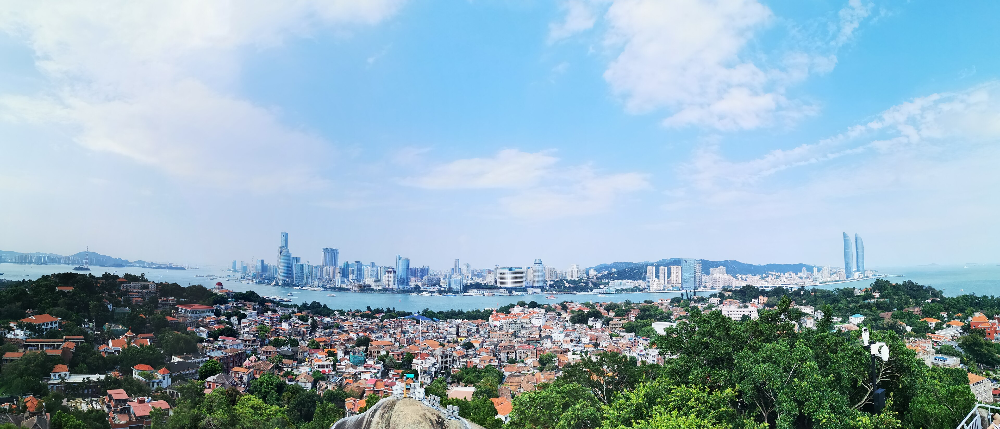
景點日光岩 — 鼓浪嶼制高點
鼓浪嶼最高點（海拔92.68m），登頂可360度俯瞰整座小島、廈門市區及台灣海峽。鄭成功曾在此屯兵，岩壁上「天風海濤」四字石刻令人印象深刻。
三丘田碼頭回廈門
嶼見閩南 · 時光幻境
全國首個閩南幻境主題景區，2025年5月全新開幕！佔地20.1萬平方米，復刻116棟歷史建築。三大演區、八大街區、83項非遺體驗、近30場沉浸式演藝。穿越「宋韻閩南」「海絲閩南」「煙火閩南」「南洋閩南」四大時空，可品嚐沙茶麵、土筍凍，體驗剪瓷雕、布袋木偶，與44名NPC演員互動。
植物園 · 南普陀寺 · 返台
上午祈福 · 下午返台
園林植物園
廈門園林植物園又稱萬石植物園，園內有熱帶雨林區與多肉植物區兩大亮點。熱帶雨林區定時噴灑水霧，營造出如夢似幻的仙境感；多肉植物區則有巨大的仙人掌與仙人球，非常適合拍照。
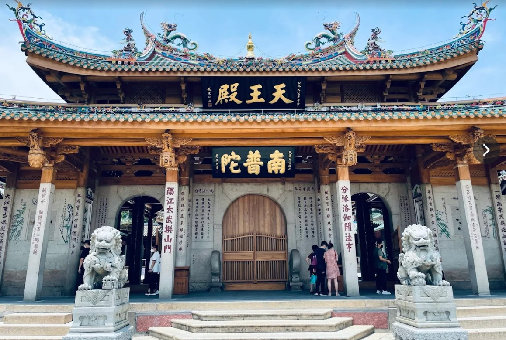
宗教古剎南普陀寺
始建於唐代的閩南佛教聖地，因供奉觀音菩薩、位於普陀山以南而得名。寺內天王殿、大雄寶殿、藏經閣氣勢恢宏，後山五老峰可俯瞰廈門全景。免費開放，每人可領一支香，贈送「隨緣」小卡。緊鄰廈門大學，步行僅需5分鐘。
廈門五通碼頭 → 金門水頭碼頭
從廈門五通碼頭搭乘小三通渡輪前往金門水頭碼頭，航程約1小時。建議提早30分鐘到碼頭候船。
台北松山機場抵達
17:50 抵達台北松山機場，廈門五天四夜之旅圓滿結束，帶著滿滿的回憶與伴手禮，平安回家！
💰 預算規劃 （不含部分門票）
點擊金額可直接修改（單位：新台幣 NT$）
💡 廈門旅遊小提醒
前往廈門需持有效台胞證，建議提前確認有效期限（至少6個月以上）。現在可辦電子台胞證，更加便利。
建議開通國際漫遊。廈門普遍使用微信支付與支付寶，建議提前綁定大陸銀行卡或開通跨境支付功能。電動車租借也需掃碼支付。
島上只能步行，沒有機動車輛。建議穿舒適好走的鞋，自備水和防曬。旺季人潮多，渡輪建議提前3-5天在官網或公眾號預訂。65歲以上船票無免費優惠。
五月廈門氣溫約22-28°C，天氣舒適但有時多雲偶有小雨，建議備帶薄外套和折疊傘。土樓行程路況略顛簸，有暈車者備暈車藥。
沙茶麵、薑母鴨、海蠣煎、花生湯、土筍凍、鹹水鴨。八市海鮮市場可現買現煮，後灣海鮮大排擋建議14:00前到場。龍頭路小食勝過鼓浪嶼正餐。
不要隨便相信路邊的人